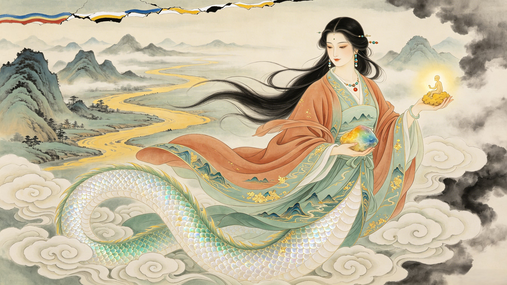

Mother of All Humanity
女娲
She who shaped the first people from yellow clay by the banks of the Yellow River. She who held up the broken sky with five-colored stones when the pillars of heaven collapsed. The goddess whose hands held the world — twice.
Who is Nüwa in Chinese mythology? Nüwa is the primordial creator goddess — the mother of all humanity. According to the oldest Chinese creation myths, she molded the first human beings from yellow clay along the banks of the Yellow River, breathing life into each figure with her divine breath. When she grew tired of hand-shaping each person, she dipped a rope in mud and swung it — the droplets became the common people, while the hand-shaped figures became the nobility. She is one of the most ancient deities in Chinese civilization, appearing in texts dating back to the 4th century BCE.
What is the Sky Repair myth? When the water god Gonggong smashed his head against Mount Buzhou, one of the pillars holding up the sky, the heavens tilted and cracked. Fire rained down, floods swallowed the land, and wild beasts devoured the innocent. Nüwa melted five-colored stones to patch the broken sky, cut off the legs of a giant turtle to replace the fallen pillar, burned reeds to ash to dam the floods, and slew the Black Dragon that terrorized the people. She saved creation — not by commanding armies, but by repairing the cosmos with her own hands.
Is Nüwa related to Fuxi? Yes — Nüwa and Fuxi are depicted as both sister and husband in Chinese mythology. Together they represent the primordial pair that established human civilization: she created humanity; he taught them to hunt, fish, and write. In Han dynasty tomb carvings, they are often shown intertwined, their serpent tails coiled together, holding a compass (Nüwa) and a carpenter's square (Fuxi) — symbols of cosmic order and human craft.
In the time after Pangu separated heaven and earth, the world was beautiful — mountains rose green against blue skies, rivers carved silver paths through fertile valleys, forests teemed with life. But there was no one to see it. The gods existed, but they were remote, scattered across the celestial realms. Nüwa descended to the mortal world and found it achingly empty. She walked its landscapes alone — through misty gorges, across reed-choked marshes, along the yellow silt of the great river. Everywhere she saw beauty without witness, abundance without appreciation. The silence was unbearable. So she knelt beside the riverbank, scooped up a handful of yellow clay, and began to shape. She gave her figures eyes to see the world, ears to hear its music, mouths to name its wonders, and hands to shape their own creations. She breathed on each one — and they lived. She had invented people. Not as servants. Not as worshippers. But as companions — beings who could look at the world she loved and say, "This is beautiful."
The peace she had made did not last. Gonggong, the god of water, had been defeated in a cosmic struggle for power against Zhuanxu (or, in some versions, against the fire god Zhurong). Enraged and humiliated, Gonggong smashed his head against Mount Buzhou — one of the four great pillars that held up the sky. The pillar shattered. The sky tilted northwest. The earth cracked open in the southeast. The celestial dome was pierced — cosmic fire poured through the breach. The world-oceans surged through the fissures in the earth. Wild beasts and monstrous serpents poured from the underworld to prey upon the terrified people Nüwa had created. Her children were dying. The world she had shaped was being unmade. No celestial army came. No Jade Emperor had yet been enthroned. There was only Nüwa — and she did not hesitate.
Nüwa gathered five-colored stones from the bed of the great river — blue, red, yellow, white, and black. She melted them in a cosmic fire that burned at the edge of the world, refining them into a liquid rainbow of divine substance. With this molten stone, she patched the broken sky — each color sealing a different aspect of the celestial wound: blue for the dome itself, red for the dawn, yellow for the earth's reflection, white for the clouds, black for the depths of space. But the sky still sagged toward the northwest. So she found Ao, the giant turtle of the Eastern Sea — a creature so vast that its shell could be seen from the moon. She cut off its four legs and used one to replace Mount Buzhou as the sky's pillar. Then she burned vast fields of reeds to ash and used the ash to dam the floodwaters. Finally, she hunted and slew the Black Dragon — the great serpent that had been devouring her people — and drove the wild beasts back into the forests. She had not just fought a battle. She had repaired a planet.
From the earliest Chinese texts to Han dynasty iconography — tracing Nüwa through the archaeological record of ancient China.
Yellow clay, a riverbank, and a goddess who wanted someone to share the beauty of the world — the full story of how humanity was born.
Five-colored stones melted into cosmic mortar. A turtle's legs for pillars. Reed ash to dam the floods. The greatest act of repair in mythology.
The Black Dragon slain. Gonggong's flood tamed. Wild beasts driven back. When creation was threatened, the mother became a warrior.
Blue, red, yellow, white, and black — the sacred stones that sealed the heavens. Their cosmic meaning, their earthly traces, and the myth of the stone that remained.
Nüwa temples across China, her place in Chinese folk religion, and how the mother goddess endures in art, literature, and modern culture.
Send your words to Nüwa. They will be pressed into yellow clay and fired in the kiln of the earth, preserved by the mother of all people for eternity.
Dive Deeper